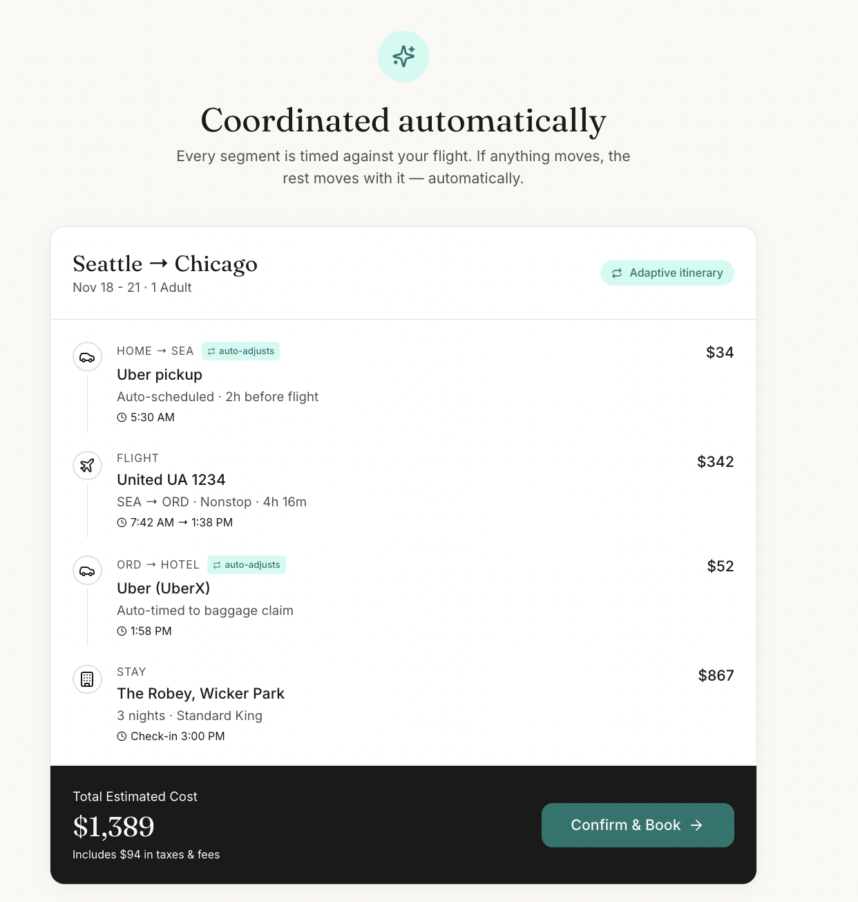
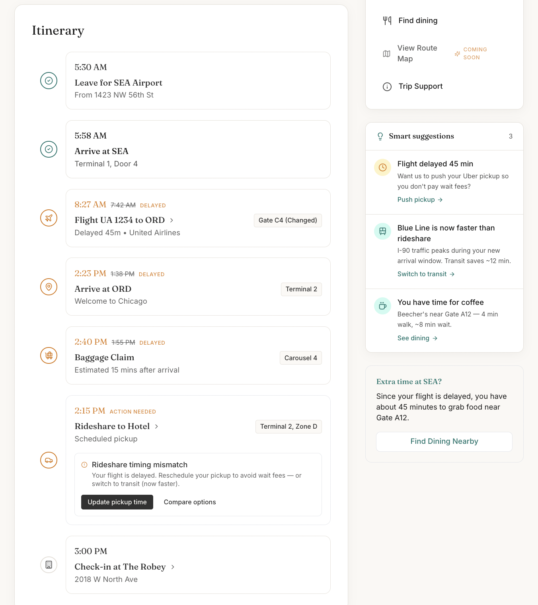
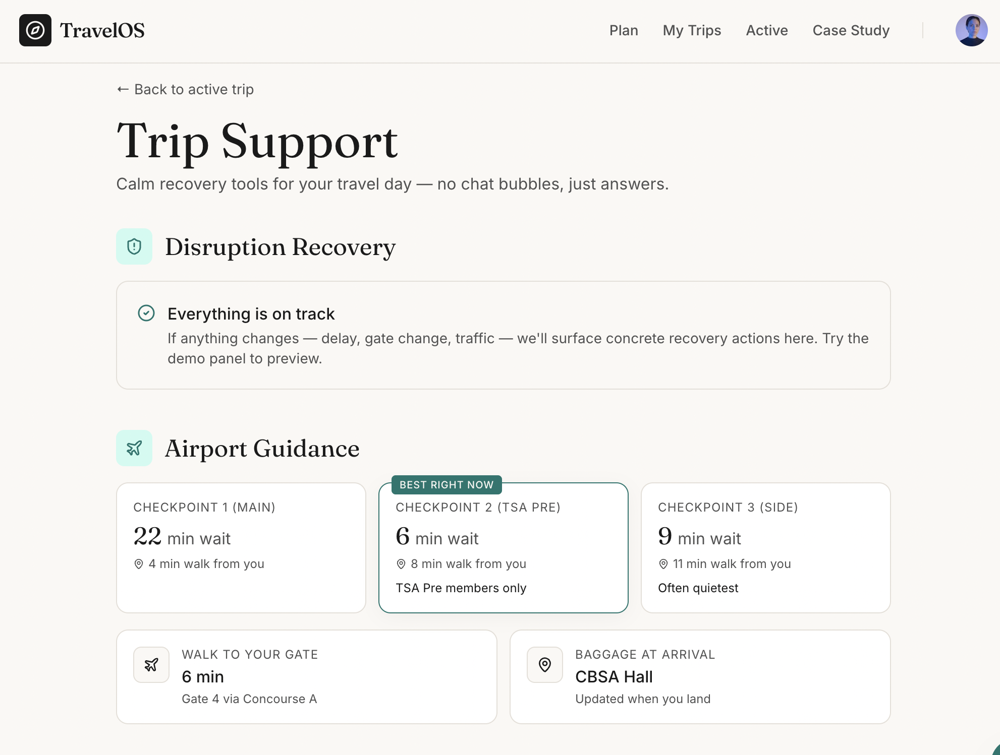
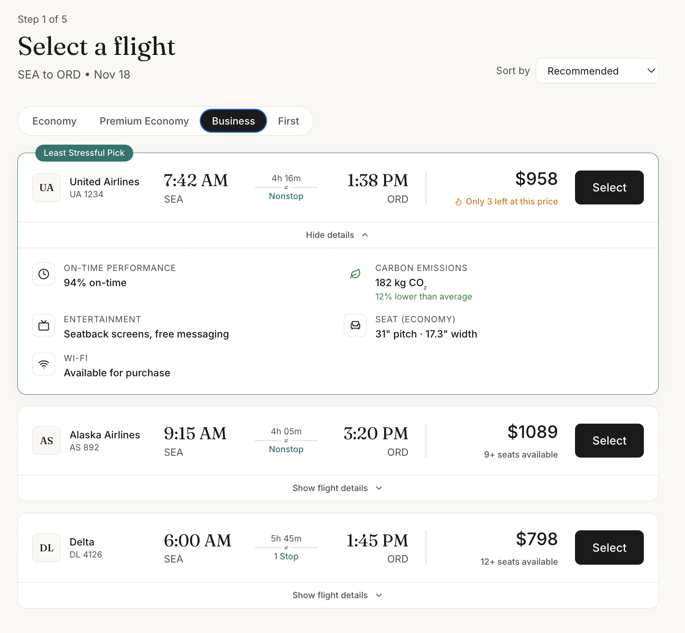
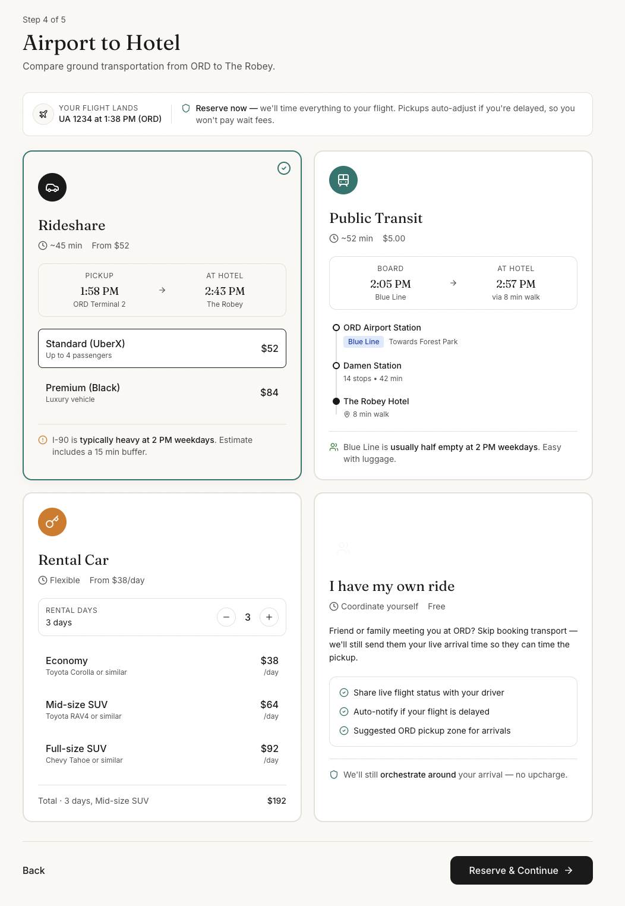
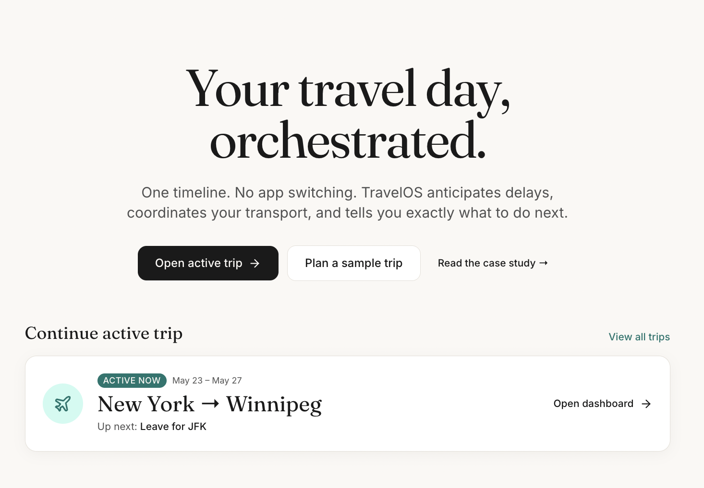

TravelOS
A travel-day command center that turns airports, hotels, and rideshares into a single, calm timeline.
Travel stress usually comes from coordination failure, not transportation itself.

Overview
The core insight behind TravelOS was simple: travel stress usually comes from coordination failure, not transportation itself.
A typical traveler manually synchronizes airline apps, rideshare apps, hotel apps, transit apps, maps, weather, and terminal information across a constantly changing timeline.
When one thing changes — a delay, traffic, a gate assignment, a baggage delay — every dependent plan becomes stale at the same time.
TravelOS was designed to reduce that cognitive overhead through:
- Centralized orchestration
- Timeline-based UX
- Adaptive transportation
- Contextual recommendations
- Disruption-aware interfaces
What I Focused On
This project focused less on booking mechanics and more on operational clarity.
The primary design goal was to reduce travel-day uncertainty through coordinated next-best-action design.
Instead of building isolated booking flows, I focused on:
- Timeline coherence
- Adaptive state changes
- Progressive disclosure
- Calm information density
- Disruption recovery
- Minimizing app-switching
Key areas:
- Designing a timeline-driven travel-day interface
- Creating “next-best-action” dashboard patterns
- Building disruption-aware UX states
- Coordinating dependent transportation events
- Designing adaptive transport recommendations
- Creating a calm editorial visual system for operational data

Product & UX Decisions
Timeline as the primary interaction model
Most travel products organize information by provider — airline, hotel, rideshare, transit.
TravelOS instead organizes around sequence and dependency.
The timeline became the backbone of the entire product because it matches the traveler’s mental model:
“First I do this, then I do this.”
This allowed:
- Delays to cascade naturally
- Dependent events to recompute visually
- Transportation coordination to feel understandable
- Disruptions to become legible instead of chaotic

“Up Next” as the anchor surface
The active trip dashboard intentionally prioritizes a single primary action at all times.
Instead of presenting dozens of competing cards and notifications, the interface continuously answers:
“What should I do right now?”
Examples:
- Leave for ORD
- Proceed to baggage claim
- Board Blue Line train
- Confirm rideshare pickup
- Security wait times increasing
Reducing ambiguity was a core product principle throughout the project.

Adaptive transportation logic
One of the highest-impact product decisions was treating transportation as dependent events instead of fixed schedules.
Traditional rideshare booking assumes a fixed pickup time, a predictable arrival, and no upstream disruption.
TravelOS instead models:
- Deplaning time
- Customs
- Baggage claim
- Airport congestion
- Traffic conditions
…as inputs that dynamically influence transportation recommendations.
The product continuously re-evaluates:
- Rideshare vs transit
- Pickup timing
- Delay recovery options
- Routing suggestions
…based on live trip state.
Disruptions as first-class UX states
Most travel apps treat delays as small alerts layered on top of otherwise static interfaces.
TravelOS instead treats disruptions as primary interaction states.
When a delay occurs:
- The timeline re-times dependent events
- Transportation recommendations change
- Support surfaces update
- Contextual suggestions reshuffle
- Opportunities emerge (“You now have time for dinner”)
The goal was creating an interface that remains calm and coherent even when plans change.

Visual & Interaction Design
The visual system intentionally avoids typical travel-startup aesthetics:
- Bright gradients
- Overly playful illustration systems
- Excessive card density
- “AI assistant” UI patterns
Instead, the interface uses:
- Warm neutral backgrounds
- Restrained teal accents
- Editorial typography
- Large serif time displays
- Sparse layouts with intentional hierarchy
The goal was making operational information feel:
- Calm
- Trustworthy
- Readable
- Premium
- Low-stress
Interaction principles
- Motion reserved for meaningful state changes
- Progressive disclosure for dense operational data
- Minimal visual noise
- Consistent spatial relationships
- Reduced cognitive switching costs

System Thinking
Although TravelOS is currently a frontend concept prototype, the project was intentionally designed around realistic operational constraints.
The product assumes integration with:
- Airline status APIs
- Rideshare systems
- Transit systems
- Mapping services
- Hotel inventory systems
- Weather feeds
The primary technical challenge is not booking itself: it’s dependency orchestration.
For example:
- A delayed flight impacts baggage timing
- Baggage timing impacts rideshare scheduling
- Rideshare timing impacts hotel arrival
- Transit conditions may become preferable mid-trip
Designing those dependencies — and presenting them coherently — became the core systems challenge.
Trade-offs
This portfolio version intentionally uses:
- Curated demo trips
- Simulated disruptions
- Constrained booking paths
…instead of fully dynamic search and inventory systems.
The goal was prioritizing:
- Interaction quality
- State transitions
- UX clarity
- Operational storytelling
…over backend completeness.
Why this approach
A smaller number of highly-polished scenarios created a stronger demonstration of the product philosophy than a generic open-ended booking flow.
Result
TravelOS became an exploration of how operational complexity can be transformed into calm, understandable experiences through product design and systems thinking.
The project reflects my interest in building products where:
- UX
- Frontend engineering
- Workflow design
- Operational systems
- Interaction architecture
…all reinforce each other instead of existing separately.
— Dan Thoreson